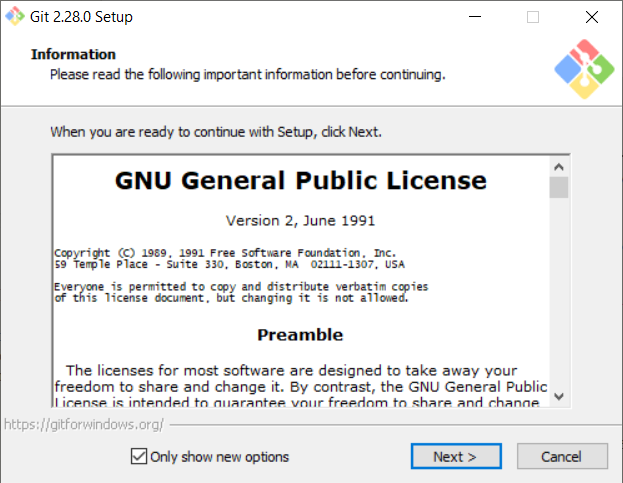

The focus of this lesson will be three-fold.
First, we will have a brief introduction to this course and what you can expect to gain from it.
Then, we will learn about modern developer tools incorporated into browsers.
Lastly, we will install a text editor and learn about how to work with text editors efficiently.
What is this course all about?
The DWC Essential Web Tools class is intended to help you gain knowledge in tools that will help you in your career. It is similar to when I first learned to use a saw. It took a bit of effort — or perhaps even some mistakes — to learn how to use the saw efficiently and safely. However, once I learned those skills, I could do pretty much anything. I could build cabinets, dressers, night stands, book shelves, benches, chicken coops, tree houses, and the list goes on and on.
When you learn how to effectively use modern web tools, you begin to enjoy your life as a programmer much, much more. This is because you are able to perform the same tasks that you once did, only with much more efficiency and speed.
Course Outline
This course will be taught over the course of 4 lessons. These lessons will go through browser developer tools, text editors, command line, version control and hosting, package managers and many other things. The topics in each lesson are as follows:
Assignments
To help solidify your learning in these areas, you will be exposed to multiple projects and given tasks relevant to these projects throughout the course. These projects will incorporate the principles that you are learning which will in turn help you to grow in your understanding and confidence of these topics.
For lesson 1, you will submit the first assignment at the end of our first class. Then, for the rest of the course you will have an assignment due at the beginning of each lesson.
Course Outcome Review
Please be sure to review the Course Outcomes on the home page of this course.
What is a Text Editor?
A text editor is program that allows you to open, view, and edit plain text files. Unlike word processors, text editors do not add formatting to text, instead focusing on editing functions for plain text.
Text editors are used by a wide variety of people, for a wide variety of purposes. Software programmers and web developers use text editors to write and edit in programming and markup languages. This is one of the primary purposes of text editors, and many of the features of text editing software are built to help these users read and write code. However, text editors are ideal tools for anyone who needs to write quickly and simply, read source code, or create text files.
If you have Windows, you already have the default Notepad application installed on your system. Notepad is a very basic text editor with minimal features and low capabilities. If you only need a text editor for small tasks, Notepad will work just fine. However, Notepad's limitations become apparent if you try to do some more heavy duty text editing.
With more advanced text editors come more advanced and useful features. Syntax highlighting, one of the most useful tools in a text editor's repertoire, color codes text based on the programming/markup language it written in. Other staple text editing features not included in Notepad are large file support, advanced find and replace, vertical selection editing, and document comparison, and more.
If you're looking for a Notepad replacement, many text editors are available online for download and purchase. The quality of such text editors varies greatly, and it's a good idea to research the different kinds available to find one that matches your needs before making a decision. Most text editors that you can buy allow you to download a trial version before committing to a purchase, and this is a great way to figure out what works for you.
To make a decision on which one to use, we'll use a simple metric...what is being used the most? There are many reasons as to why a given text editor will be used more than others. Notice the image below from blockstack.org:

VS Code is a rapidly growing, widely support, incredibly useful text editor that you will learn how to use in this class.
Getting Started with VS Code
To set up our computers to write code, all we need to do is download a text editor. We will be using Visual Studio Code also known as VS Code.
-
Open this webpage in your browser.
-
Download VS Code for your operating system.
-
Install VS Code.
-
Accept all the default settings.
Working with VS Code
When you open up VS Code, you should select Open Folder and open the folder on your computer where you keep all of your code. The file explorer window in VS Code will be very helpful as you navigate these files and create new ones. Please watch this video to get some quick tips regarding VS Code and getting started:
The following video has some helpful tips for getting started:
What is git (and what is github)
Before we start installing git, and creating a github account, let's learn about what they are and why they're important:
By far, the most widely used modern version control system in the world today is Git. Git is a mature, actively maintained open source project originally developed in 2005 by Linus Torvalds, the famous creator of the Linux operating system kernel. A staggering number of software projects rely on Git for version control, including commercial projects as well as open source. Developers who have worked with Git are well represented in the pool of available software development talent and it works well on a wide range of operating systems and IDEs (Integrated Development Environments).
Install Git
If you haven't before, you'll need to and install git. If you already have git installed, skip this step.
Go to git-scm.com and choose the appropriate download for your operating system.
Run the installer with the default settings and wait for the installation to finish.

Restart VS Code if you have it open, and open a new terminal window by selecting New Terminal inside of the Terminal menu.
In your terminal, execute
git --version.If "git --version" produces an error, make sure git has been added to your PATH environment variable, then restart VS Code.
Instructor Tip:
On Windows, Git is usually installed at
C:\Program Files\Git\cmd. This is the location that should be added to your PATH.

Create a new repository
What is Github?
GitHub is a code hosting platform for version control and collaboration. It lets you and others work together on projects from anywhere.
It is similar to Google Drive, OneDrive, or Dropbox in the fact that it is simply a place to store files. It is most often used to store code, and it works alongside git in managing git repositories. Git is what you will install on your machine to manage your projects, and github is where you will save your code long term. Github is also frequently used for professional portfolios. Many employers ask their interviewees to share with them their Github profiles so that they can see what code has been written by the individual.
Get Started with Github
The following video shows how to create an account, create a repository (a place to store code) and how to connect it to a folder on your computer using VS Code.
Go to GitHub.com and sign up for a new account if you haven't already. If you already have an account, that is perfect, you can use it here.
After creating an account, return to GitHub.com and sign in. In the upper right corner of the screen you should see a "+" icon. Click this and select "New Repository".
Choose a name for your repository (likely javascript1 or something similar).
Leave the repo public and do not check the box for a readme. Leave .gitignore and license as "none".
Instructor Tip:
It's not technically a problem if you add these other files now, but it makes it a little more difficult when you go to push to GitHub for the first time, because you'll have conflicts that you'll have to resolve. So at this point, it's easiest to leave everything blank.
Click the button to create the repository.
On the page that follows, you should see a URL for your new repository (e.g., "https://github.com/username/repositoryname.git"). Copy this URL for use later on.
Set up the repository on your computer
In VS Code, selectOpen Folder from the File menu. Open the
JavaScript1folder you just created.Open a new terminal window by selecting New Terminal inside of the Terminal menu.
Return to GitHub, open your project repository, copy the link to clone it
In your terminal, execute "git clone --your url--"